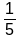
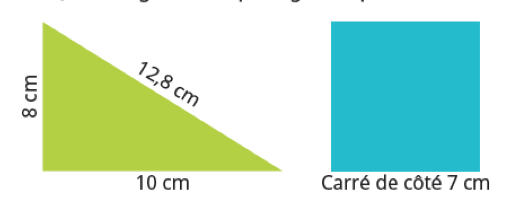

On considère le programme de calcul suivant : ● Choisir un nombre ● Calculer le quart de ce nombre ; ● Soustraire 3 au résultat obtenu ● Multiplier le résultat par 2 ● Écrire le résultat obtenu Quel nombre obtient-on si l’on choisit 16 comme nombre de départ ?
|
Donner
l’écriture décimale de :
 |
Qu 
|
Compléter : 1 dm² est ……… fois plus petit qu’un m² |